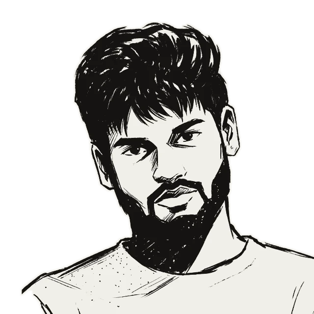

SIX DIRECTIONS. ONE HORIZON.
Beyond the ordinary.
Your landscape, brought to life.
Six ways to move through the golden hour.

Titu Jeshurun B.Designs it. Deploys it.MOTION SIGNATURE
SIX DIRECTIONS. ONE HORIZON.
Your landscape, brought to life.
Six ways to move through the golden hour.

Titu Jeshurun B.Designs it. Deploys it.